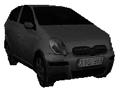

Always nearby
Drag the frameless car anywhere on your desktop. It sits quietly at the bottom of your windows.
desktop companion / windows
A tiny animated Toyota Yaris that lives on your desktop, plays its own soundtrack, and stays out of the way until you need it.
Free & open source • Windows 10/11 • MIT licensed

02 / what it does
Drag the frameless car anywhere on your desktop. It sits quietly at the bottom of your windows.
Right-click for the compact menu, then turn the soundtrack up, down, or off whenever you like.
Download the standalone Windows executable. No Python setup or terminal required.
03 / take it with you
Latest Windows build
YARIS.exe